Submit online under ‘Quizzes’-> Homework 1 Online Submission by Midnight, or in class on paper.
Will’s Wednesday office hours are cancelled 1/23 and 1/30. Alternate times will be announced.
We found that some words patterned with one affix
Some used a different one
The final sound seemed to be causing this to happen
[z] for /j g d ɹ n w b m l i aj v u oʊ/
[s] for /t p k f θ/
[ɪz] for /tʃ dʒ s ʃ z/
Lists are inefficient
Lists treat these phenomena as unmotivated
Lists disguise relationships among sounds
Lists aren’t graceful
Phonology is not just algebra with symbols
Your IPA chart is not just an arbitrary scattering of sounds
Phonetic motivation for changes is often based on geography
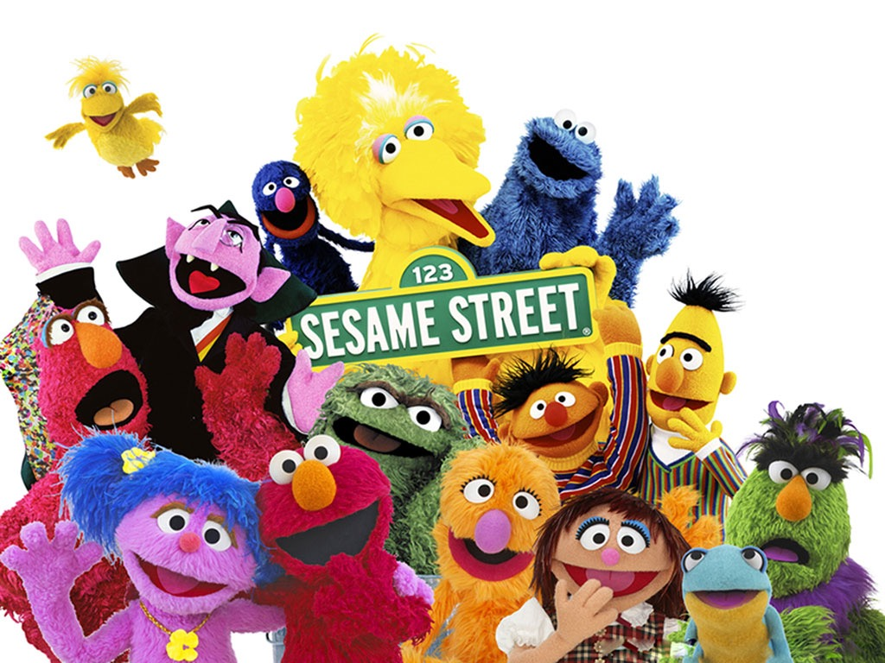
/s/ is the only voiceless sound, all the rest are voiced sounds
/n/ is the only nasal sound, all the rest are oral
A set of speech sounds in a given language that is able to be uniquely, completely, and succinctly described in terms of the shared phonetic (“natural”) properties of its members.
Voiceless stops (English & Spanish): [p, t, k]
Voiced fricatives (English): [v, ð, z, ʒ]
Voiced fricatives (Spanish): [β, ð, ɣ]
Front vowels (English): [iː, ɪ, eɪ, ɛ, æ]
Front vowels (Spanish): [i, e]
[p t k] are described by many natural classes
A rule that applies to [p t k] might not apply to all consonants or stops
All the sounds it’s intended to describe
Only the sounds it’s intended to describe
These two things make them technically correct
[uː, ʊ, oʊ, ɔː] are changing into something else
Vowels?
Back vowels?
Rounded Vowels?
Rounded Vowels is the technically correct class
Your natural class description should only include necessary properties
[p t k] in English are ‘voiceless stops’
Natural class correctness depends on the language you’re working in
In English, [p t k] are the voiceless stops
In Bari, [p t ɟ k] are the voiceless stops
“Stop Consonants”
“High Vowels”
“Liquids” describes [l] [ɹ] in English
“Sibilants” describes [s] [z] [ʃ] [tʃ] [dʒ] [ʒ]
“Sonorant” describes Nasals, Approximants, Vowels, Taps, Trills
“Obstruent” describes Stops, Affricates, Fricatives
These sounds share characteristics which aren’t a single place/manner/voicing type


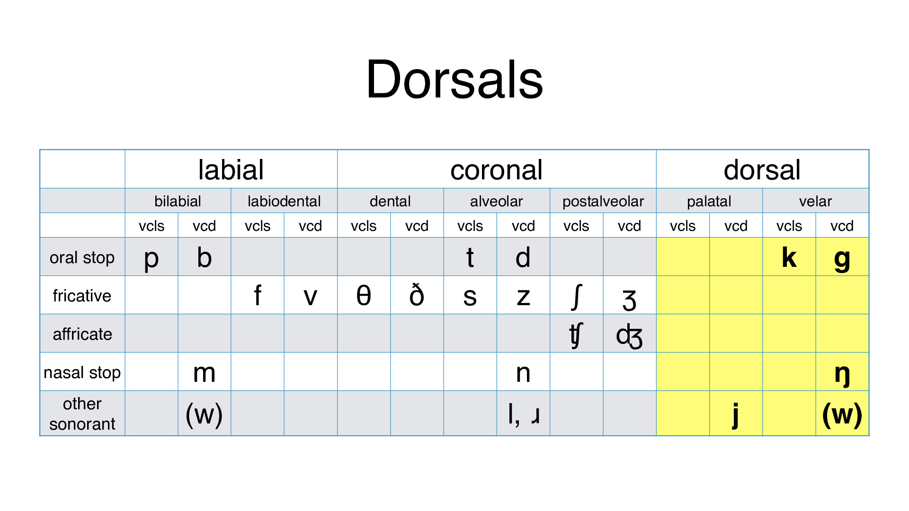
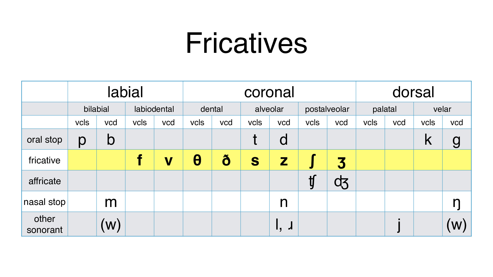


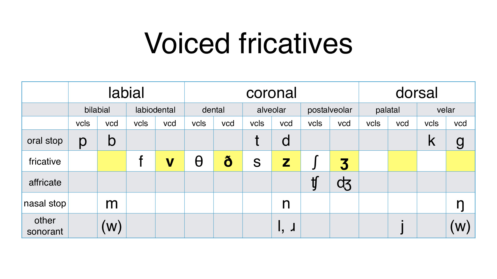
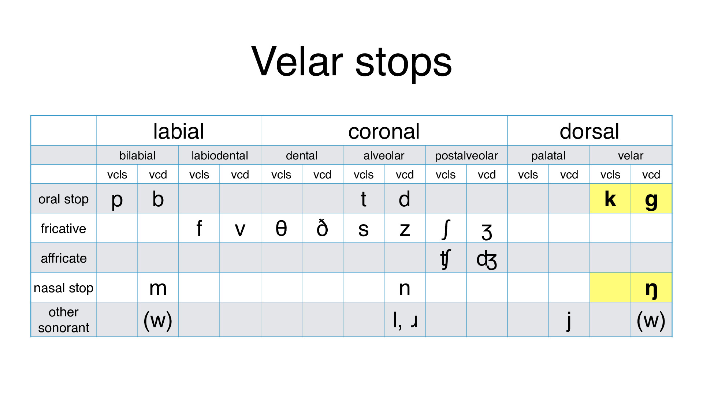


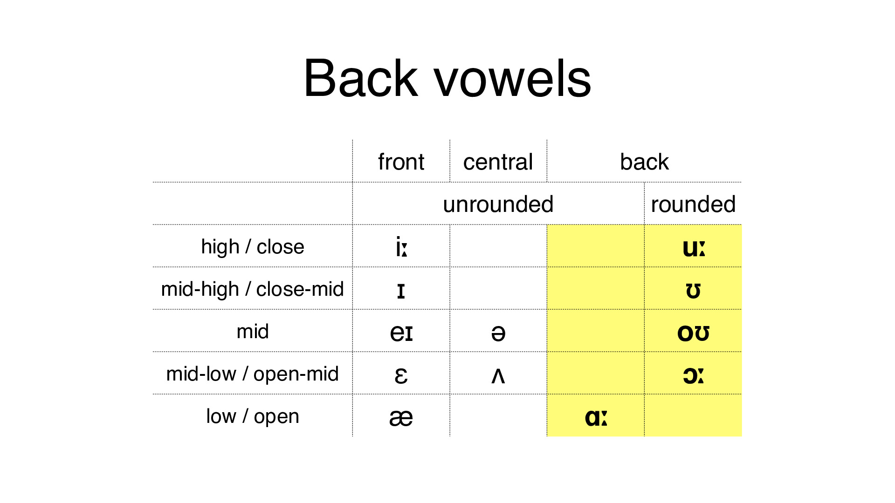
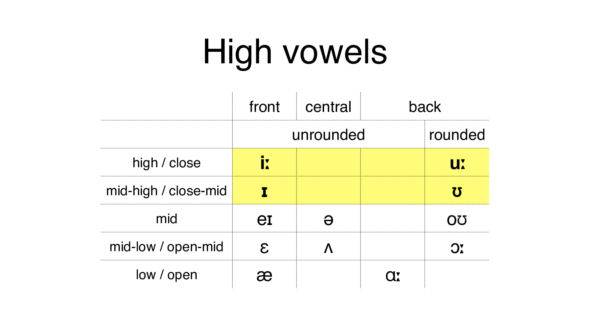

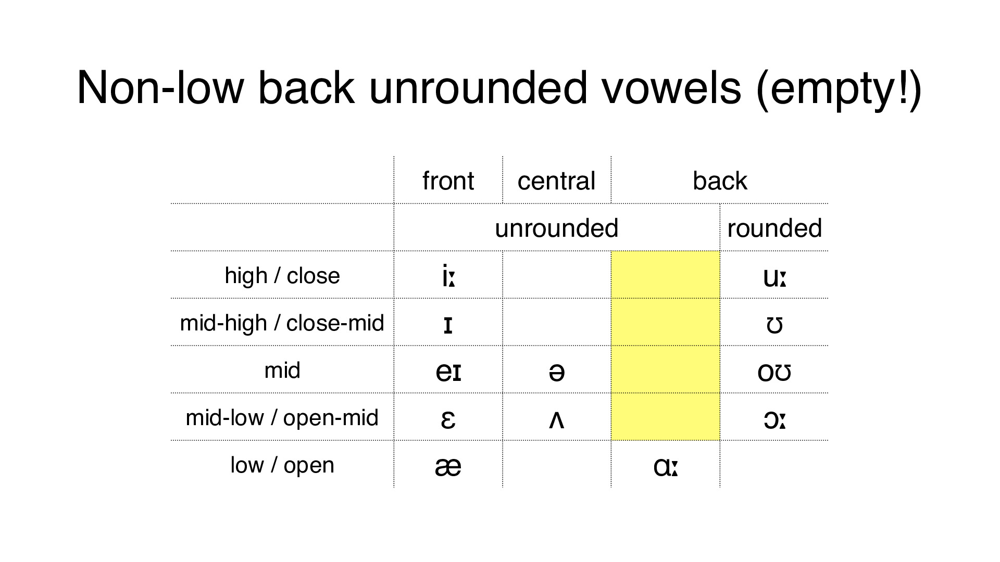

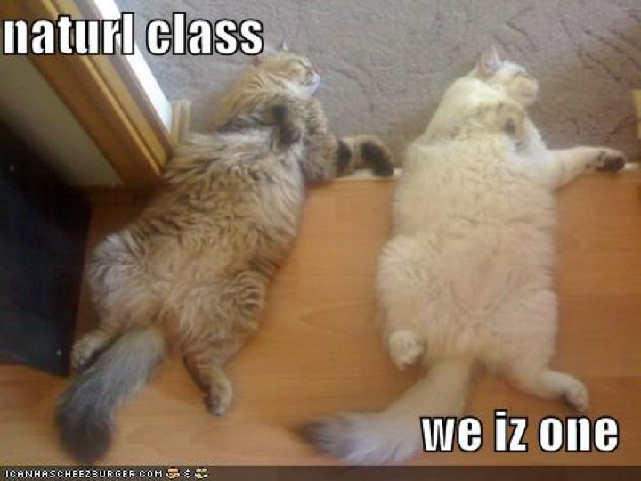
Natural classes can be the ‘targets’ of rules
Natural classes can ‘trigger’ rules
Very often, rules will act on groups of sounds which share features
Rules seldom depend on weird groupings
If your analysis starts with “This alternation is triggered by one of [p d h i w n]…”, be careful.
If you cannot reframe your analysis in terms of natural classes, think twice.
It’s not impossible, though.
Indigenous lg. of the Great Plains, Siouan, ~2,100 speakers
[p] becomes [b] before sonorants
[k] becomes [g] before sonorants
[t] never occurs before sonorants
(Turns out this is why Lakota is Lakota, not Dakota or Nakota!)

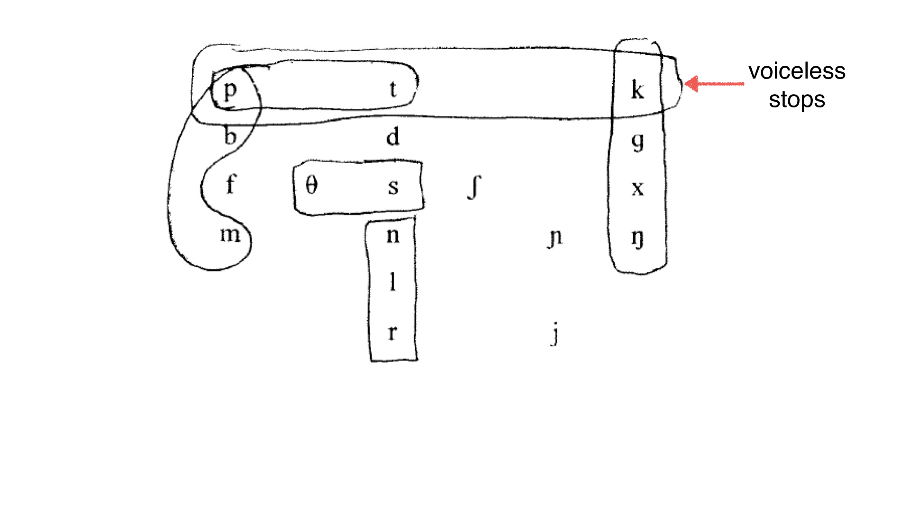

 |
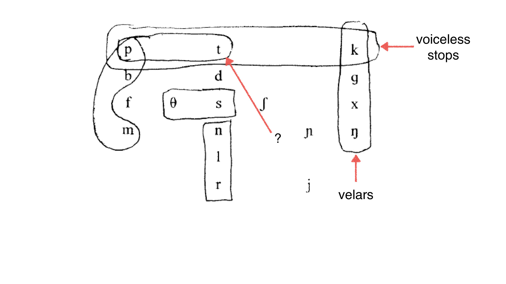


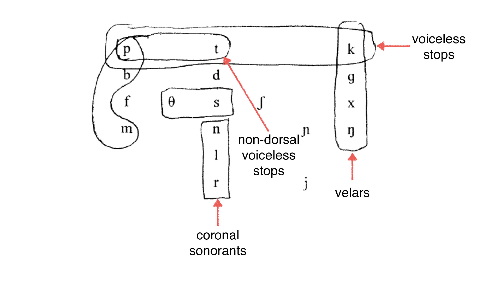


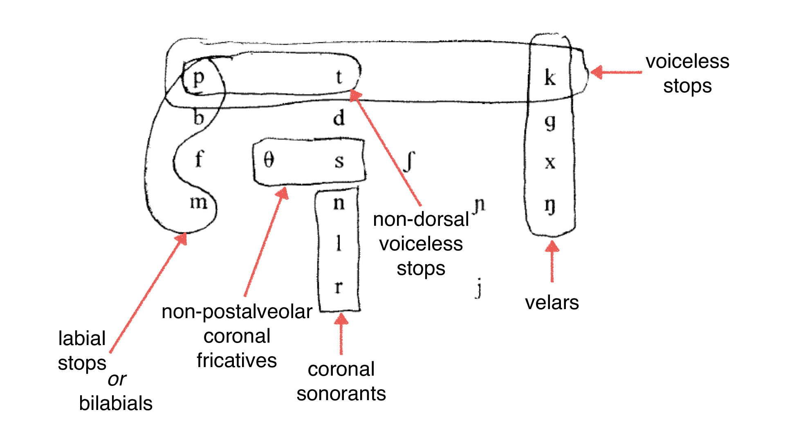

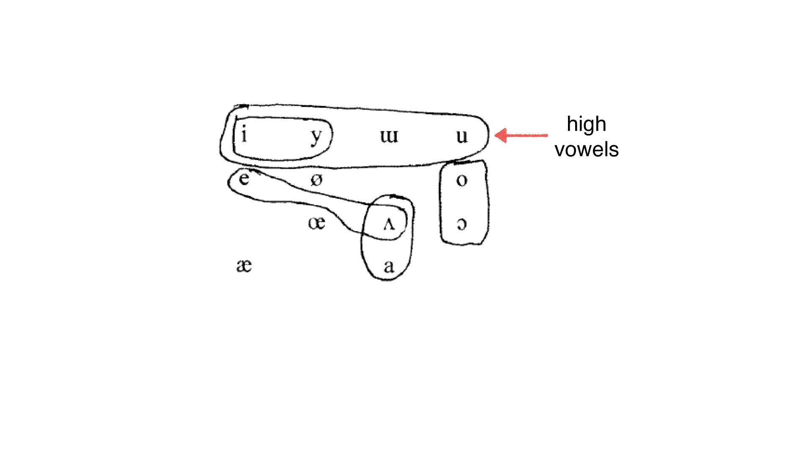


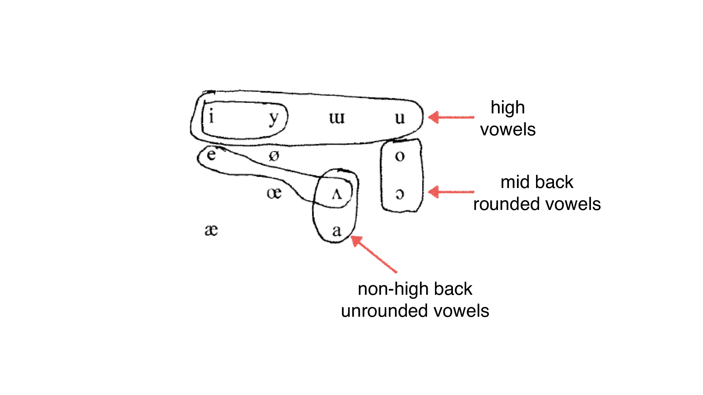

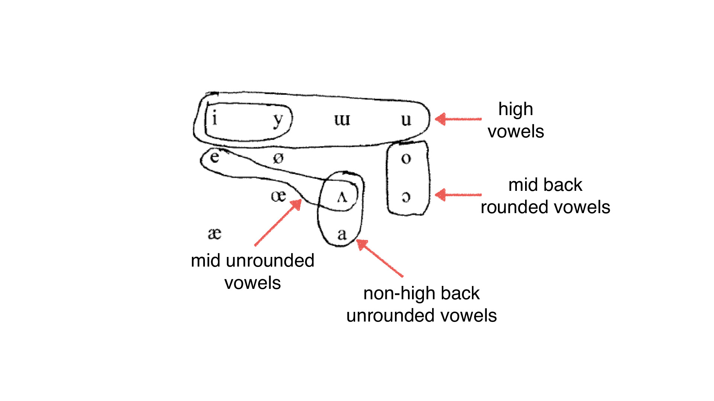
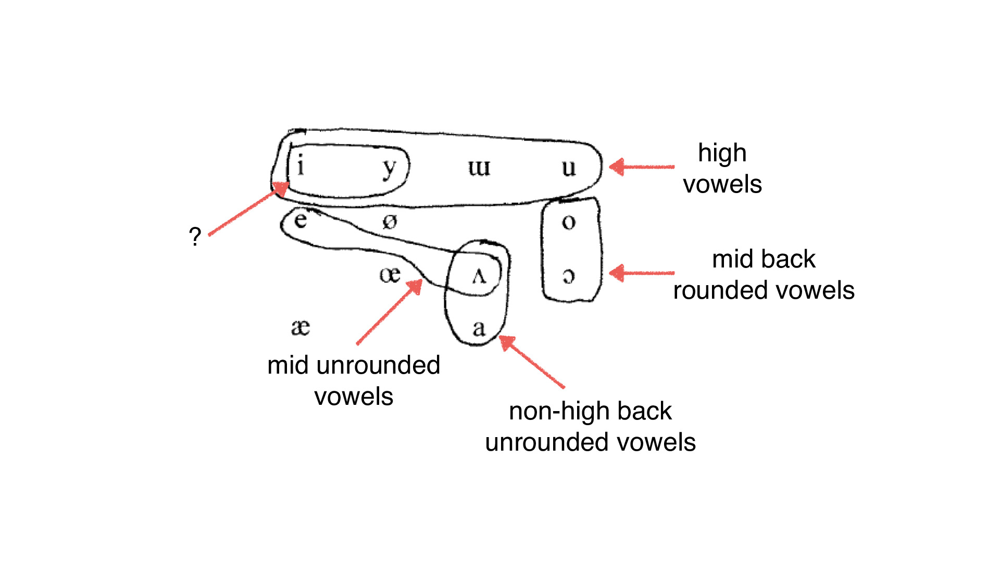

They let us move beyond lists
They let us write single rules, rather than sets of rules
They start us on the road to features